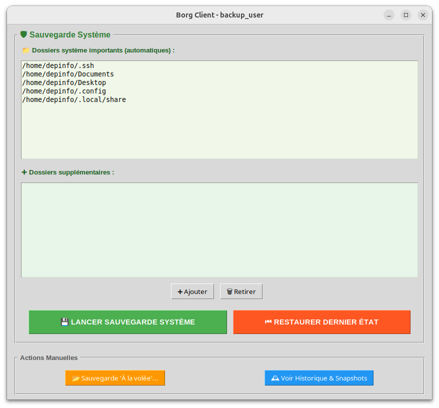

Développement d'un client de sauvegarde graphique permettant de sauvegarder et restaurer des fichiers de manière sécurisée, versionnée et dédupliquée, en s'appuyant sur l'outil professionnel Borg Backup.
L'objectif est de simplifier l'usage de Borg, normalement en ligne de commande, en proposant une interface graphique intuitive accessible aux utilisateurs non techniques, tout en conservant toute la puissance et la fiabilité de Borg côté backend.
Client :
Serveur :

L'application appelle Borg via subprocess. Borg parcourt les fichiers, les découpe en blocs de taille variable, calcule des hashs et ne stocke que les blocs nouveaux ou modifiés.
Chaque sauvegarde est une nouvelle archive avec nom de groupe et horodatage. Borg assure la déduplication en interne, le projet ajoute une navigation logique par versions.
Avant restauration, simulation avec borg extract --dry-run, détection des conflits de fichiers et confirmation utilisateur avant écrasement.
Récupération de l'historique via borg list --json, affichage par groupe, date et version avec possibilité de consulter le contenu et de supprimer des archives.
Intégration avancée de Borg via Python, gestion de processus système et orchestration de sauvegardes automatisées
Mise en place d'authentification SSH par clé, gestion sécurisée des connexions et chiffrement des données
Conception d'une interface Tkinter multi-fenêtres intuitive, avec drag & drop et gestion d'événements
Maîtrise des concepts de déduplication, versioning, sauvegardes incrémentales et restauration de données
Ce projet m'a permis de concevoir une solution de sauvegarde complète combinant fiabilité, sécurité et simplicité d'utilisation, tout en m'appuyant sur un outil professionnel reconnu dans l'administration système.
L'enjeu principal était de rendre accessible un outil en ligne de commande complexe, tout en préservant sa puissance technique et en garantissant une expérience utilisateur fluide.